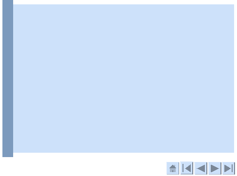
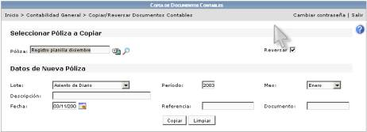

2
Facilidades de
contabilidad
El sistema
permite construir sobre la información contenida de tal forma que simplifica las operaciones, permitiendo incorporar
movimientos recurrentes o reversar
transacciones completas con herramientas interconstruidas.
Esta forma parte de una de las utilidades
regulares del sistema para falicilitar y potencializar su uso disminuyendo los requerimientos de
tiempo en la labor.
i